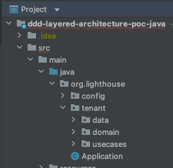
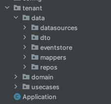
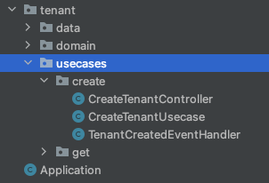
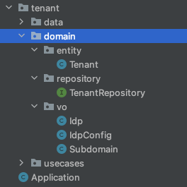

Domain Driven Design (DDD)
Domain Driven Design (DDD)
Two aspects:
- Decomposing the Application
- Layered Architecture
Today we're talking about Layered architecture
Decomposing the Application
Talk about after the demo if time.
DDD - Layered Architecture
Each layer communicates with immediate adjacent layer, all dependencies flow inward.

Lots of names for this
- Clean Architecture
- Onion Architecture
- Hexagonal Architecture
- Ports and Adapters
Why should the business care?
- The business wants a sustainable product
- Avoids the big ball of mud that codebases can turn into if boundaries are not clearly defined
- Easier to test at each layer of the app.
This is not about quick wins, it's an investment into the future
...10 years from now
Why do developers care?
- Follows SOLID principles
- Single Responsibility Classes at each layer
- Easier to test classes (smaller units to test)
- Domain knows nothing about implementation details (i.e. Database)
- Swappable outer layers (i.e. database) without changing inner layers (i.e. usecases and domain objects).

How?
Every service will implement these directories: Data, Usecases, Domain
Data - holds all classes pertaining to data access, transformation, transfer, etc...
Usecases - holds all classes pertaining to a single use case, Controller, Usecase, Subscriber
Domain - holds Entities, Value Objects, Respository Interface (not impl of repo)
Entities and Value Objects
- All business invariants are encapsulated in Domain Objects
- Validation is next to the data it represents
- DTO's should be converted to Domain Objects coming into Use Case
- Domain Objects should be converted to DTO's going out of Use Case
Use Cases should always work with Domain Objects
So that invariants are enforcedDemo
DDD - Bounded Contexts
- Typically map to independent microservices
Example - Decomposing LNG
- CMS
- Metrics
- Document Storage
- Page Builder
- etc...
This is up for debate, this is technical decomposition not business decomposition
Domains should be decomposed by business process
- Look at the business process
- Look at specific use cases of the process.
- Derive the subdomains around business units/groups
- or, Derive the subdomains around core entity of the business unit
Example - Business Process
- Knowledge Worker submits content to LH
- Content Moderator reviews content and requests changes or approves for publishing
- Subject Matter Experts curate content around particular topics into single space
- Knowledge Seeker can view curated content around specific subject
- Knowledge Seeker can use full text search to find content
Example - Business Process Domains
- CMS Subdomain - Knowledge Worker submits content
- Moderation Subdomain - Content Moderator reviews content
- Spaces Subomain - Subject Matter Experts curates content into space
- Spaces Subomain - Knowledge Seeker can view curated content for specific subject
- Search Subdomain - Knowledge Seeker can (cognitive) search to find content